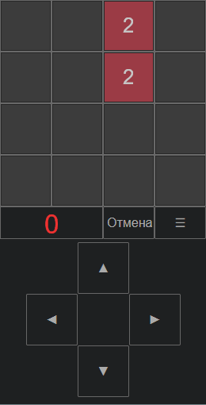

A2048
Назначение
Необходимо стрелками сдвигать все плитки с числами вправо или влево или вверх или вниз, при этом одинаковые числа складываются.

Взаимосвязанные
A2048
Описание
Известная игра, описание и правила которой есть в википедии и на просторах интернета.
Необходимо стрелками сдвигать все плитки с числами вправо или влево или вверх или вниз, при этом одинаковые числа складываются. Задача набрать как можно больше плиток с большими числами, их сумма является числом очков за игру (сейчас). Конец игры когда поле заполнено плитками и невозможно сложить, чтобы добавить новую.
Основные правила
- Плитка не добавляется если не происходит модификация поля, то есть нет сложения или перемещения плиток.
- Если плитки одинаковые то складываются с того краю, в котором направление движения, то есть 444 влево даст 84 (не 48)
- Складываются только видимые, без вычисленных, то есть 8422 влево могли бы дать 16, но будет только 844. Аналогично 2222 могли бы дать 8, но будет 44. То есть требуется второй шаг для сложения.
- Появляются плитки 4 и 2, при чём 2 с вероятностью 80%, а 4 с вероятностью 20%.
-
Очки должны добавляться только в момент сложения, но пока сделано общий подсчёт плиток в момент окончания игры и это меньше чем если бы прибавлялось складываемые. Будем посмотреть.